Marca y handle
Elementos de identificación
Cómo aparece la marca en cada pieza de contenido — handle, logo, taglines. Todo tiene reglas exactas.
Handle oficial
@cirujanomolina
Cormorant Garamond · Discreto · Siempre presente en cada pieza.
Arriba cuando el contenido principal vive abajo.
Abajo cuando el contenido principal vive arriba.
Arriba cuando el contenido principal vive abajo.
Abajo cuando el contenido principal vive arriba.
Logo en slides de contenido (Símbolo JSM)


Solo el símbolo monograma JSM. Discreto, en una esquina del slide. Opacidad 50% sobre fondos oscuros, 30% sobre fondos claros.
Logo en slide de Cierre / CTA


Logo completo con nombre y especialidad. Se usa en el slide final para consolidar la marca y cerrar la llamada a la acción.
Catálogo Completo de Variantes de Logo
Sello / Estampa

Ideal para marcas de agua, firmas circulares o perfiles.
Logo Superpuesto

Formato vertical apilado. Centrado en slides o portadas.
Logotipo de Nombre

Tipografía refinada sin monograma. Para encabezados elegantes.
Tagline principal
"Recupera quien eres."
CTAs · Slide final · Bio · Piezas de impacto emocional
Tagline institucional
"Humanidad, ciencia y acompañamiento real."
Presentaciones · Logo completo · Contextos formales
Ritmo visual — reglas de energía
Alternancia de fondos
Libre — no es una fórmula fija. Se alterna entre oscuro y claro según lo que el carrusel necesite, no por turno obligado.
Intensidad constante
Todos los slides mantienen intensidad. El objetivo es retención total — ningún slide puede "bajar la guardia" del lector.
Objetivo de cada carrusel
Viralidad
Retención
Autoridad
Conversión